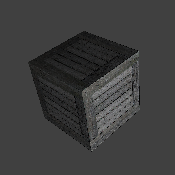
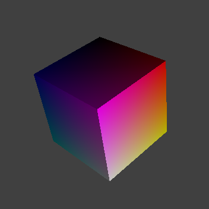
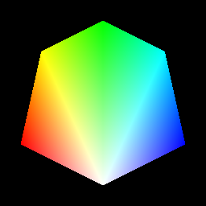
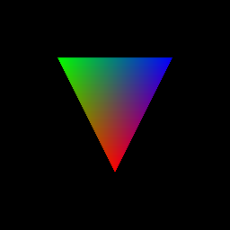
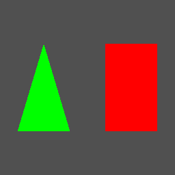
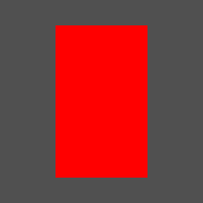

Example renders with corresponding command-stream parses from cffdump tool.
|  |
| cube-textured (cffdump) |
|  |
| cube (cffdump) |
|  |
| fan-smoothed (cffdump) |
| strip-smoothed (cffdump) |
|  |
| triangle-smoothed (cffdump) |
|  |
| triangle-quad (cffdump) |
|  |
| quad-flat (cffdump) |